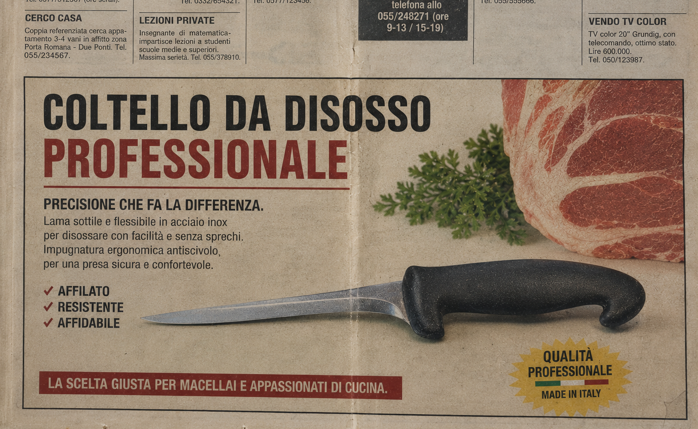
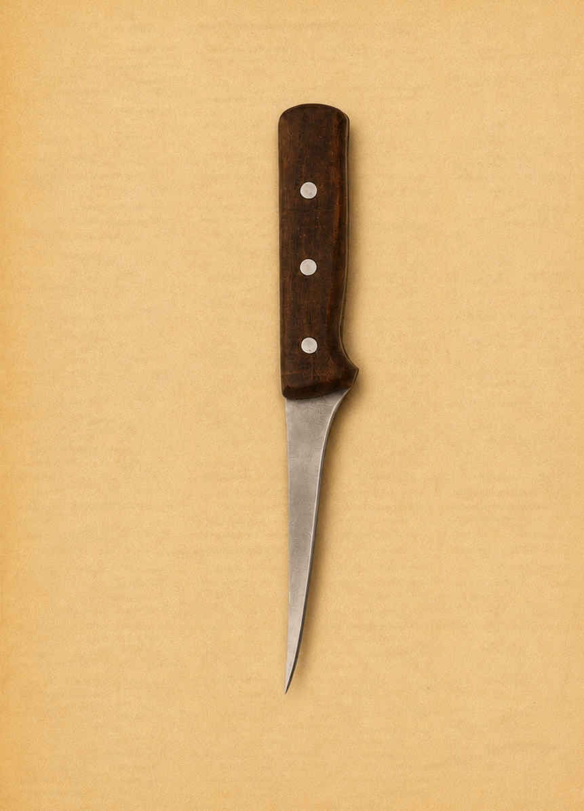

De veciariìe è l’eredità di Ruggiero Somma, macellaio nato a Barletta. Il suo lavoro, ereditato da diverse generazioni, era per lui qualcosa che andava raccontato: un modo per mostrare cosa c’è dietro un semplice banco di vendita o una saracinesca alzata.
Toritto diventa una delle tappe di questo percorso visivo. Attraverso i volti, gli strumenti e gli spazi delle botteghe, il mestiere prende forma come racconto quotidiano, fatto di gesti precisi e memorie condivise.
A Bari Ruggiero decide di mandare avanti la sua attività durante gli anni Sessanta. La bottega diventa casa, luogo di lavoro e punto d’incontro, uno spazio in cui il mestiere si intreccia con la vita del quartiere.
Conversano entra nell’archivio come frammento di una geografia più ampia. Ogni immagine conserva un dettaglio: un banco, un’insegna, un coltello, una postura, una relazione tra chi lavora e chi attraversa quei luoghi.
Taranto chiude idealmente questo viaggio tra le macellerie pugliesi. Quello che doveva essere l’album orgoglioso di una categoria diventa, con il tempo, il documento malinconico di un mondo che stava cambiando.